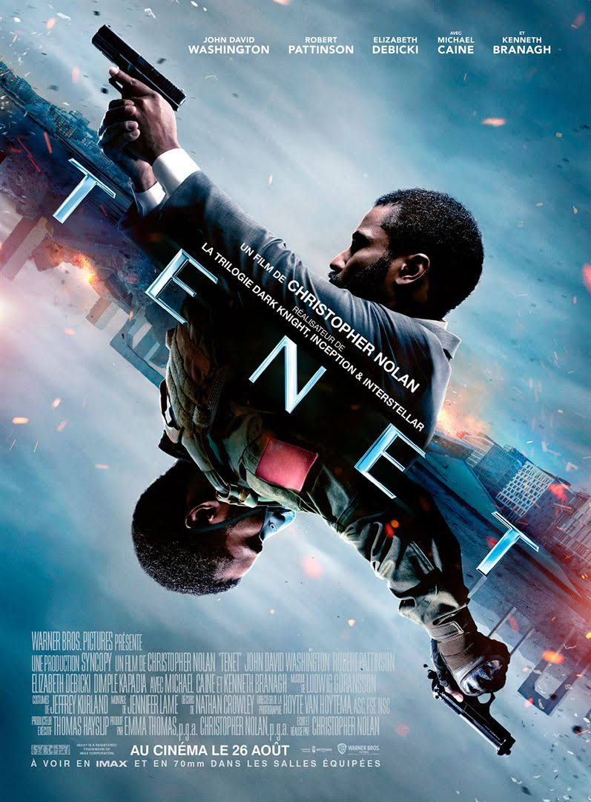
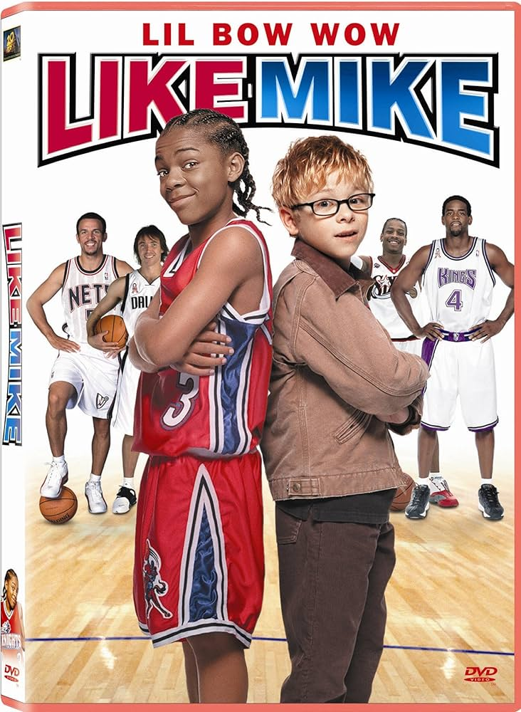

Film 1
Tenet est un thriller de science-fiction américano-britannique écrit et réalisé par Christopher Nolan, sorti en 2020.
Film 2
L'histoire racontée est celle de Calvin Cambridge (Lil Bow Wow), un jeune garçon orphelin de 13 ans, qui voudrait devenir star de basket-ball. Le problème est qu'il est plutôt petit pour son âge (1,41 m), et qu'il n'a pas vraiment le niveau. Mais un jour, il tombe sur une paire de chaussures qui aurait appartenu à "MJ" (le nom de Michael Jordan est évoqué dans le film) lorsqu'il était enfant. Calvin les essaie et miracle, il a le jeu d'une star de la National Basketball Association (NBA). Il intègre par la suite la NBA dans l'équipe des Los Angeles Knights (équipe fictive en réalité) où il se heurte alors à la star de l'équipe Tracy Reynolds.